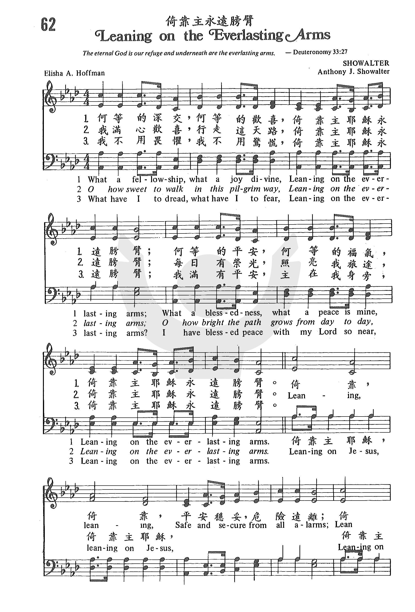

|
|
靠主膀臂 |
|
1 What a fellowship, what a joy divine, Refrain: 2 O how sweet to walk in this pilgrim way, 3 What have I to dread, what have I to fear, The United Methodist Hymnal, 1989 |
何等的深交，何等的歡喜，倚靠主耶穌永遠膀臂， |
|
https://www.zanmeishige.com/tab/25379.html?songbook=1&index=62
 |
|
|
|
|

倚靠主永遠膀臂（粵語）Leaning On The Everlasting Arms https://youtu.be/71TlOLeuOUA -
Leaning on the Everlasting Arms Acapeldridge https://youtu.be/SaXJQD0Xixk -
https://youtu.be/9PK2apVQNS0 -
The Statler Brothers - Official Video for 'Leaning on the Everlasting Arms
https://youtu.be/O-sKYJJMJAg
| Text: | Leaning on the Everlasting Arms |
| Author: | Elisha A. Hoffman |
| Author (refrain): | Anthony J. Showalter |
| Tune: | SHOWALTER |
| Composer: | A. J. S. |
| Short Name: | E. A. Hoffman |
| Full Name: | Hoffman, E. A. (Elisha Albright), 1839-1929 |
| Birth Year: | 1839 |
| Death Year: | 1929 |
Elisha Hoffman (1839-1929)

after graduating from Union Seminary in Pennsylvania was ordained in 1868. As a minister he was appointed to the circuit in Napoleon, Ohio in 1872. He worked with the Evangelical Association's publishing arm in Cleveland for eleven years. He served in many chapels and churches in Cleveland and in Grafton in the 1880s, among them Bethel Home for Sailors and Seamen, Chestnut Ridge Union Chapel, Grace Congregational Church and Rockport Congregational Church. In his lifetime he wrote more than 2,000 gospel songs including"Leaning on the everlasting arms" (1894). The fifty song books he edited include Pentecostal Hymns No. 1 and The Evergreen, 1873.
Mary Louise VanDyke
Tune Information
| Title: | SHOWALTER (Showalter 33321) |
| Composer: | A. J. Showalter (1887) |
| Meter: | 10.9.10.9 with refrain |
| Incipit: | 33321 22216 55171 |
| Key: | A♭ Major |
| Copyright: | Public Domain |
| Short Name: | A. J. Showalter |
| Full Name: | Showalter, A. J. (Anthony Johnson), 1858-1924 |
| Birth Year: | 1858 |
| Death Year: | 1924 |
Anthony Johnson Showalter USA 1858-1924/
Born in Cherry Grove, VA, he became an organist, gospel music composer, author, teacher, editor, and publisher. He was taught by his father and in 1876 received training at the Ruebush-Kieffer School of Music, Dayton, VA. He also attended George Root’s National Normal school at Erie, PA, and Dr Palmer’s International Normal at Meadville, PA. He was teaching music in shape note singing schools by age 14. He taught literary school at age 19, and normal music schools at age 22, when he also published his first book. In 1881 he married Lucy Carolyn (Callie) Walser of TX, and they had seven children: Tennie, Karl, Essie, Jennie, Lena, Margaret, and Nellie. At age 23 he published his “Harmony & composition” book, and years later his “Theory of music”. In 1884 he moved to Dalton, GA, and in 1890 formed the Showalter Music Company of Dalton. His company printed and published hymnals, songbooks, schoolbooks, magazines, and newspapers, and had offices in Texarkana, AR, and Chattanooga, TN. In 1888 he became a member of the M T N A (Music Teachers National Association) and was vice-president for his state for several years. In 1895 he went abroad to study methods of teachers and conductors in Europe. He held sessions of his Southern Normal Music Institute in a dozen or more states. He edited “The music teacher & home magazine” for 20 years. In 1895 he issued his “New harmony & composition” book. He authored 60+ books on music theory, harmony, and song. He published 130+ music books that sold over a million copies. Not only was he president of the A J Showalter Music Company of Dalton, GA, but also of the Showalter-Patton Company of Dallas, TX, two of the largest music publishing houses in the American south. He was a choir leader and an elder in the First Presbyterian Church in Dalton (and his daughter, Essie, played the organ there). He managed his fruit farm, looking after nearly 20,000 trees , of which 15,000 are the famous Georgia Elberta peaches, the rest being apples, plums, pecans, and a dozen other varieties of peaches. He was also a stockholder and director of the Cherokee Lumber Company of Dalton, GA, furnishing building materials to a large trade in many southern, central and eastern states. He died in Chattanooga, TN, and is buried in Dalton, GA. He loved hymns, and kept up with many of his students over the years, writing them letters of counsel and encouragement. In 2000 Showalter was inducted into the Southern Gospel Music Hall of Fame.
Note: Showalter received two letters one evening from former music students, both of who were grieving over the death of their wives. He had heard a sermon about the arms of Moses being held up during battle, and managed to form a tune and refrain for a hymn, but struggled to find words for the verses that fit. He wrote to his friend in OH, Rev Elisha Hoffman, who had already composed many hymns and asked if he could write some lyrics, which he gladly did.
John Perry
倚靠主永遠膀臂 Leaning on the Everlasting Arms
何等的深交，何等的歡喜，倚靠主耶穌永遠膀臂，
何等的平安，何等的福氣，倚靠主耶穌永遠膀臂。
何等的甜美，行走這天路，倚靠主耶穌永遠膀臂，
何等大榮光，照亮我旅途，倚靠主耶穌永遠膀臂。
我何用畏懼，我何用驚慌，倚靠主耶穌永遠膀臂，
主在我身旁，我滿有平安，倚靠主耶穌永遠膀臂。
（副歌）
依靠，依靠，平安穩妥，恐懼平息，
依靠，依靠，倚靠主耶穌永遠膀臂。
 (請點耳機收聽)
(請點耳機收聽)
通常的聖詩都是先有詞後譜曲，本詩是先曲而後詞。 作曲者蕭華德（Anthony J. Showalter, 1858-1924），原藉維吉尼亞州。
自幼隨父學音樂，嗣後從數位名師學習歌唱。 1880年開始在音樂學校教授聲樂，繼而自辦出版事業，出版六十多種聖樂詩集，銷售逾二百萬冊。
三十七歲赴英、法、德三國進修聖樂一年。 他在美國南部十二州，經常舉辦歌唱學校及訓練班。 他是長老會的長老。
1888年他在阿拉巴馬州舉辦音樂活動時，接到南卡羅來納州兩個學生的來信，他們都最近喪妻，向他傾吐失去親人的痛苦。他不知如何執筆安慰他們，禱告後，申命記33:27：「永生的神是你的居所，他永久的膀臂在你以下。」湧現心頭，就在信上告訴他們神的膀臂能扶持我們，傷心的人可投靠祂。寄信後，想起何不將這經文作一詩歌？
他作了曲，根據那節聖經寫下了副歌的歌詞，就寄給他的好友霍夫曼，請他完成歌詞。
這首聖詩是特為在受試煉，心中傷痛的人而作的。 唱這首詩時，想到神永遠的膀臂，雖災難臨身，心中痛楚難忍，但有神的膀臂扶持，可免跌倒。
霍夫曼（Elisa A. Hoffman, 1839-1929）生於美國賓州，父親是牧師。
他畢業於協和神學院，沒有受過正式的音樂訓練，但神給他藉詩歌表達救恩的恩賜。 十八歲開始作詩，總計有二千多首福音詩歌，許多時也兼作曲。
他是長老會的牧師，也在基督教的出版社事奉十一年。
霍夫曼著名的聖詩有「要告訴耶穌」（I Must Tell Jesus），「是否將一切獻上」（Is
Your All on the Altar），「何等奇妙的救主」（What a Wonderful
Savior），「榮耀歸主名」（Glory to His Name）等。
何等奇妙的救主
What
A Wonderful Savior
基督已經完成救贖，何等奇妙的救主！
我們罪價祂已代付，何等奇妙的救主！
我讚美祂因祂流血，何等奇妙的救主！
與神和好蒙祂喜悅，何等奇妙的救主！
祂潔淨我所有罪孽，何等奇妙的救主！
在我心裡統治一切，何等奇妙的救主！
祂賜給我得勝權能，何等奇妙的救主！
每遇戰爭都得全勝，何等奇妙的救主！
（副歌）
何等奇妙的救主是耶穌，主耶穌！
何等奇妙的救主是耶穌，我主！
(請點耳機收聽)
中英文聖詩集參考
英文歌名 Leaning
on the Everlasting Arms
教會聖詩 62
生命聖詩 424
新聖詩 128
歡欣讚美 575
聖詩 181
讚美詩(新編) 282
青年聖歌II 151
校園詩歌II 96
英文歌名 What
A Wonderful Savior
教會聖詩 206
聖詩 67
讚美詩 53
安息在那永久膀臂中Leaning on the
Everlasting arms【詩歌】
安息在那永久膀臂中Leaning on the Everlasting arms【詩歌】
3031傳統詩歌
這首詩歌「Leaning on the everlasting arms」，中文翻譯有不同歌名，包括「安息在那永久膀臂中
」、「倚靠主永遠膀臂」等。「leaning」中文直譯是「斜靠」，譯作「安息」在字義上或許稍有差別，但卻是把那種與主同在的感覺精準地表達出來：唯有不憑自己，完全的倚靠主，才能享受到全然平安的滿足。
在約翰福音十三章裡有一段經文記載耶穌與門徒共享最後的晚餐，那裡說道「門徒中有一個人，是耶穌所愛的，原來斜靠在耶穌懷裡。....那個人便就勢靠着耶穌的胸膛。（約13:23-25）」。這裡的「靠著」英文譯本多作「leaning」。在這段敘述中，作者約翰沒有提到自己的名字，而是自稱為「耶穌所愛的門徒」。他所描述的正是在第一世紀猶太人的筵席場景，當時餐桌的高度大約只到膝蓋的位置，遠低於現代的餐桌，通常人們不會坐在椅子上，而是靠著桌子，側身坐在草蓆或坐墊上。約翰和主坐得如此靠近，所以當約翰轉頭問主的時候，他便「就勢靠著耶穌的胸膛」，把頭斜倚在耶穌的懷裡。
約翰與耶穌當時的親密程度，也描述了信徒今天與主的關係。我們雖然無法真正地靠在耶穌的懷裡，但我們可以將生活的重擔卸交給祂。耶穌說：「凡勞苦擔重擔的人，可以到我這裡來，我就使你們得安息」（馬太福音11章28節）
。我們無論遇到任何景況，都能信靠這位信實的救主，真是何等蒙福！你現在有在倚靠祂嗎？
简介（一） （来源：《岁首到年终》）
倚靠主永远膀臂 Leaning on the Everlasting Arms 《岁首到年终》
Elisha A. Hoffman, 1839-1929
永生的神是你的居所，祂永久的膀臂在你以下。（申 33:27）
神的膀臂是「永久的」。人的双臂，即使是因着爱而拥抱，终究也要疲乏困倦。人生是短暂的，人的双臂也是有限的 ─ 无论用它来表达爱、象征力量或是施行保护，都要因着人亡而消失。但是神的膀臂是永�琚B不松开的，随着我们一生都在我们以下。
「在你以下 」，意即我们决不会沉下去。有时我们说患难的海洋很深，好象洪水一样要淹没我们。然而神永久膀臂在深渊以下，我们不会从神的膀臂及其掌握中沉下去。我们不是像一片树叶漂泊在波涛汹涌的人生大海中，任凭风浪摆布，我们乃是在神的保守中。只要我们倚靠祂，就永远不会沉没在大水中。宇宙间没有任何一种力量能从祂手中把我们夺去。无论是死，是生，是现在的事，是将来的事，都不能使我们与神的爱隔绝。
本诗是先有曲再有词。作曲者 Anthony J. Showalter （ 1858-1924 ） 是一个成功的作家、事业家，也是敬虔的长老会信徒。某日同时收到两位朋友的来信，向他倾诉亲人死亡之悲痛。 Showalter 弟兄分别写信慰问他们，并附上申命记 33:27 之经文。当他寄出信后，突有一意念，深感这节经文可成为一首安慰的诗歌，为何不作呢？于是立刻随着灵感作了曲子并副歌歌词。他觉得需要有人来完成歌词，于是请求好友 Elisha A. Hoffman 牧师作词。这首「倚靠主永远膀臂」于是诞生， 1887 年首次出版公开问世。 Hoffman 牧师一生共写了 2000 首福音圣诗。
1
何等的深交，何等的欢喜，倚靠主耶稣永远膀臂；
何等的平安，何等的福气，倚靠主耶稣永远胜臂。
2
我满心欢喜，行走这天路，倚靠主耶稣永远膀臂；
每日有荣光，照亮我旅途，倚靠主耶稣永远膀臂。
3
我不用畏惧，我不用惊慌，倚靠主耶稣永远膀臂；
我满有平安，主在我身旁，倚靠主耶稣永远膀臂。
（副歌）
倚靠，倚靠，平安稳妥，危险远离；
倚靠，倚靠，倚靠主耶稣永远膀臂。
＊人的天然本不喜欢倚靠的，但是恩典能使你倚靠，也能给你因倚靠而来的喜乐 ── 劳伦斯
Words: Anthony Johnson Showalter (b. May 1, 1858; d.
Nov. 16, 1924)
Elisha
Albright Hoffman (b. May 7, 1839; d. Nov. 25, 1929)
Music: Anthony Johnson Showalter
Links:
Wordwise Hymns (Hoffman)
The Cyber
Hymnal
Note: Mr. Showalter wrote the tune and the refrain. Elisha Hoffman added the stanzas.
Sometimes, during a football game, a player will sustain injury to an ankle or knee, and he will be helped off the field by the training staff, leaning his weight on their shoulders. Or, think of an elderly woman, weakened by illness, and unsteady on her feet, who moves about with the aid of a walker. There are many personal means of support like that. Crutches, a cane, a staff, a walker, and even the supporting arms of others. In times of weakness, when there is a danger of falling, these are welcome indeed. And they have their parallel in the spiritual realm.
Anthony Showalter studied music in England, France and Germany. He taught music, and published over 130 music books. On one particular day the morning post brought the musician correspondence from two recent pupils of his. By coincidence, both letters bore the sad news that the man’s wife had died. Their former instructor wrote a personal response to each man, giving encouragement and comfort. He included Deuteronomy 33:27 in his comments: “The eternal God is your refuge, and underneath are the everlasting arms.”
Mr. Showalter says, “Before completing the writing of the sentence, the thought came to me that the fact that we may lean on those everlasting arms and find comfort and strength ought to be put into a song. And before finishing the letter, the words and music of the refrain were written.” The initial work on the song was later sent to hymn writer, Elisha Hoffman who added its three stanzas. Out of the kindly comfort sent to two widowed men the hymn, Leaning on the Everlasting Arms was born.
Think about that verse in Deuteronomy for a moment: “The eternal God is your refuge, and underneath are the everlasting arms.” The Lord promised the nation of Israel a refuge (security), and the undergirding of His omnipotent arms (support). These blessings, in turn, suggest two kinds of need: that they would face dangerous enemies, and that they were, in themselves, too weak to triumph and prosper.
I believe that is the sense in which we are to understand the Lord addressing Israel (“Jacob”) as a “worm” (Isa. 41:14). It suggests that which is often looked down upon as being impotent, and of no account. It’s not difficult to apply all of this to the individual believer, as David does (Ps. 40:17; 70:5). We too are threatened by those who oppose the people of God–whether demons or men. And we our strength is inadequate to enable us to defend ourselves and live in victory. We need the support and security that only God can provide. So, does Almighty God who created all things have power enough to help us? Of course (Ps. 121:2; 124:8).
What we lean upon is the key to our support and security. A weak cane or crutch will let us down. And in spiritual things, one of our biggest problems is our tendency to sinful independence–to count on ourselves for help, instead of the Lord. That’s why Proverbs exhorts us: “Trust in the Lord with all your heart, and lean not on your own understanding” (Prov. 3:5). When we trust in Him and His abundant sufficiency, there is a sense of peace and spiritual joy that fills our hearts.
What a fellowship, what a joy divine,
Leaning on the everlasting arms;
What a blessedness, what a peace is mine,
Leaning on the everlasting arms.
Questions:
1) Why are we, as Christians, so prone to think of praying last of all,
instead of first of all?
2) When we lean on the Lord, does that mean the end of personal responsibility for us? In other words, how do faith and action work together?
Links:
Wordwise Hymns (Hoffman)
The Cyber
Hymnal